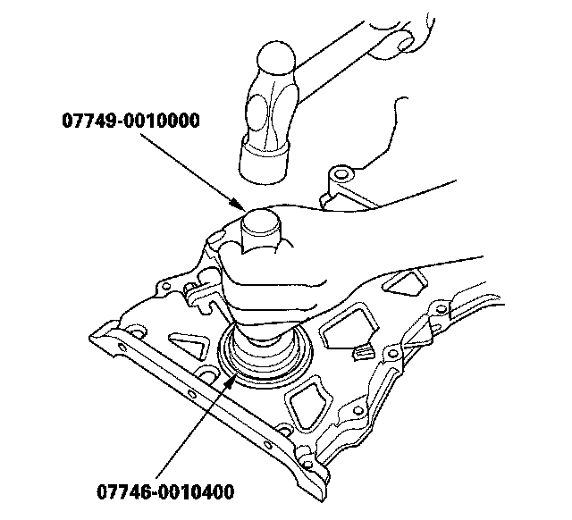
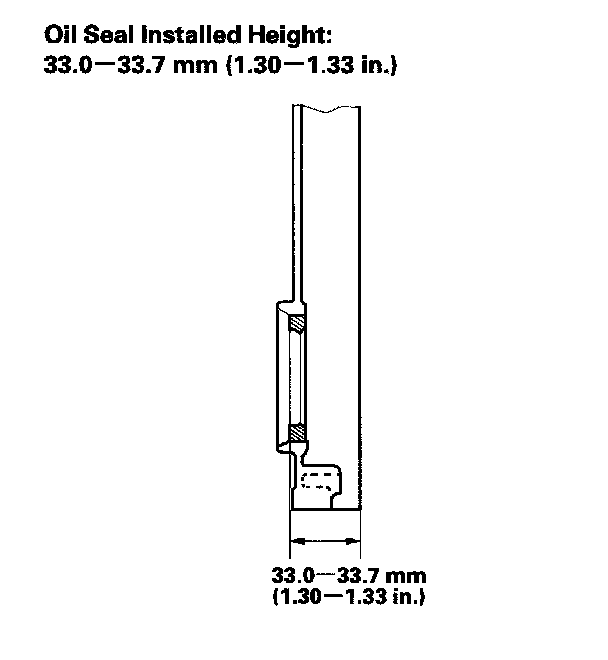

Front Crankshaft Seal: Service and Repair
Chain Case Oil Seal InstallationSpecial Tools Required
^ Driver 077 49-0010000
^ Attachment, 52 x 55 mm 07746-0010400
1. Use the special tools to drive a new oil seal squarely into the chain case to the specified installed height.

2. Measure the distance between the chain case surface and oil seal.
